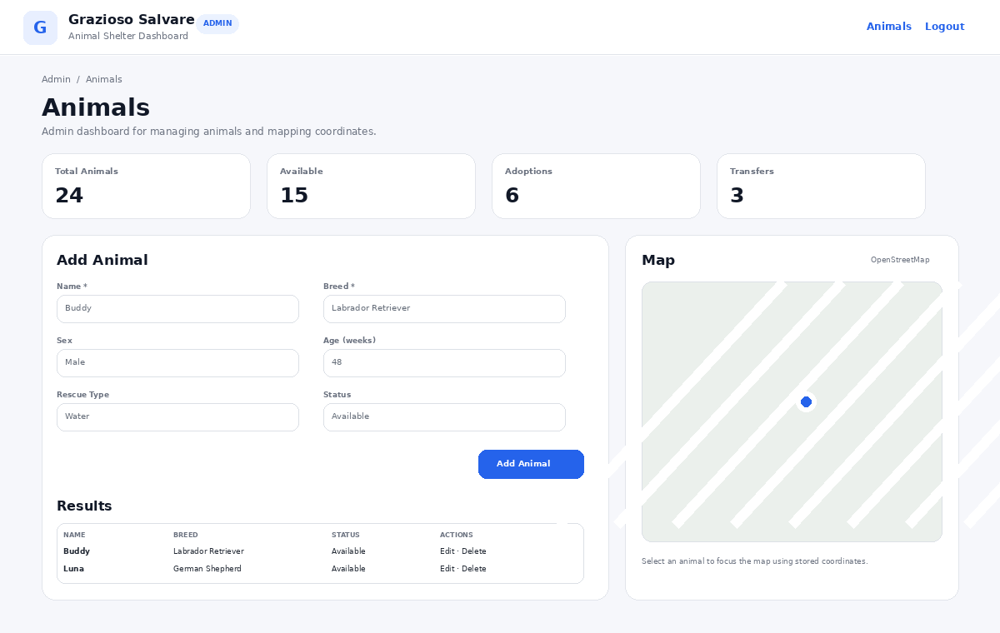
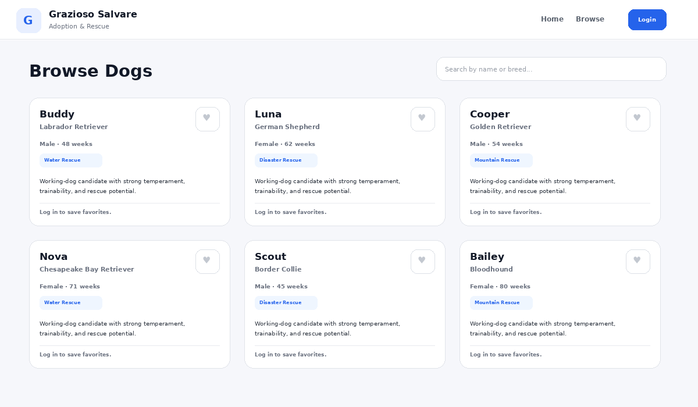

01
CAPSTONE · FULL STACK
Animal Rescue Management Platform
Secure MEAN-stack application built around real operational workflows. The customer experience supports browsing rescue candidates and saved favorites, while a protected admin dashboard provides animal CRUD operations, status tracking, aggregate counts and coordinate-based mapping.
View repository ↗UI previews reconstructed from the project source

